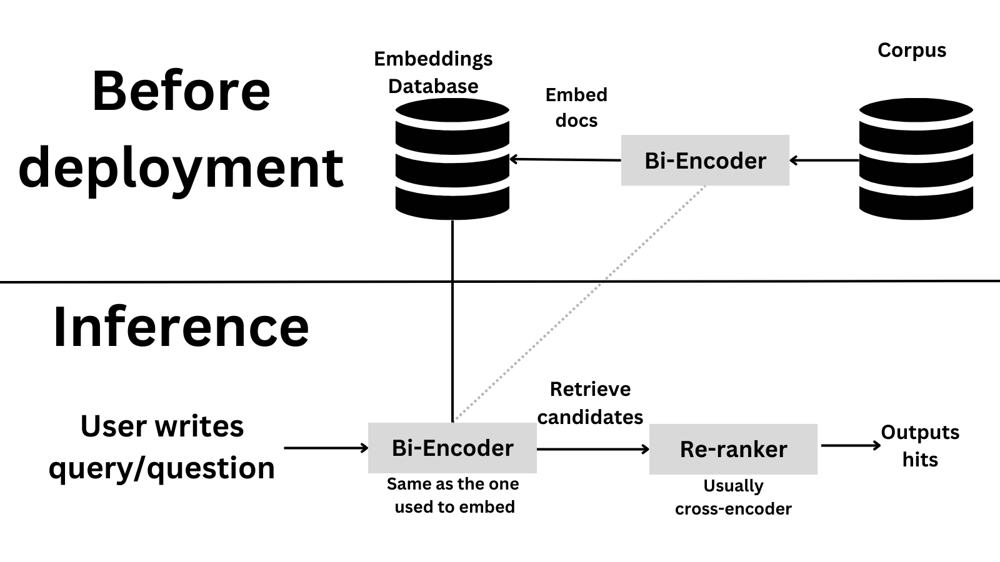
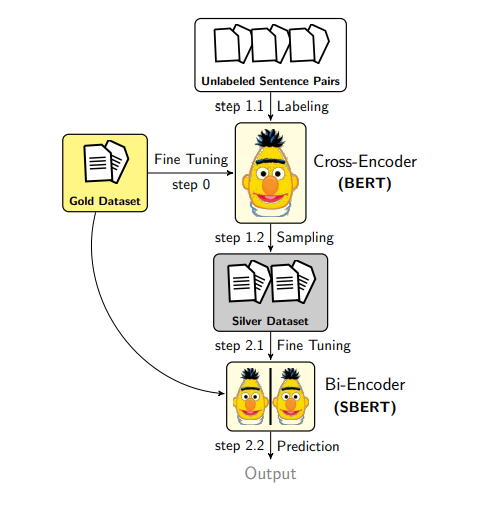

!pip install sentence_transformers datasetsSentence Embeddings. Cross-encoders and Re-ranking
Deep Dive into Cross-encoders and Re-ranking

This series aims to demystify embeddings and show you how to use them in your projects. The first blog post taught you how to use and scale up open-source embedding models, pick an existing model, current evaluation methods, and the state of the ecosystem. This second blog post will dive deeper into embeddings and explain the differences between bi-encoders and cross-encoders. Then, we’ll dive into retrieving and re-ranking: we’ll build a tool to answer questions about 400 AI papers. We’ll briefly discuss about two different papers at the end. Enjoy!
You can either read the content here or execute it in Google Colab by clicking the badge at the top of the page. Let’s dive into embeddings!
TL;DR
Sentence Transformers supports two types of models: Bi-encoders and Cross-encoders. Bi-encoders are faster and more scalable, but cross-encoders are more accurate. Although both tackle similar high-level tasks, when to use one versus the other is quite different. Bi-encoders are better for search, and cross-encoders are better for classification and high-accuracy ranking. Let’s dive into the details!
Intro
All the models we saw in the previous blog post were bi-encoders. Bi-encoders are models that encode the input text into a fixed-length vector. When you compute the similarity between two sentences, we usually encode the two sentences into two vectors and then compute the similarity between the two vectors (e.g., by using cosine similarity). We train bi-encoders to optimize the increase in the similarity between the query and relevant sentences and decrease the similarity between the query and the other sentences. This is why bi-encoders are better suited for search. As the previous blog post showed, bi-encoders are fast and easily scalable. If multiple sentences are provided, the bi-encoder will encode each sentence independently. This means that the sentence embeddings are independent of each other. This is a good thing for search, as we can encode millions of sentences in parallel. However, this also means that the bi-encoder doesn’t know anything about the relationship between the sentences.
When we use cross-encoders, we do something different. Cross-encoders encode the two sentences simultaneously and then output a classification score. The figure below shows the high-level differences

Why would you use one versus the other? Cross-encoders are slower and more memory intensive but also much more accurate. A cross-encoder is an excellent choice to compare a few dozen sentences. If you want to compare hundreds of thousands of sentences, a bi-encoder is a better choice, as otherwise a cross-encoder could take multiple hours. What if you care about accuracy and want to compare thousands of sentences efficiently? This is a typical case when you want to retrieve information. In those cases, an option is first to use a bi-encoder to reduce the number of candidates (i.e., get the top 20 most relevant examples) and then use a cross-encoder to get the final result. This is called re-ranking and is a common technique in information retrieval; we’ll learn more about it later in this blog post!
Given that the cross-encoder is more accurate, it’s also a good option for tasks where subtle differences matter, such as medical or legal documents where a slight difference in wording can change the sentence’s meaning.
Cross-encoders
As mentioned, cross-encoders encode two texts simultaneously and then output a classification label. The cross-encoder first generates a single embedding that captures representations and their relationships. Compared to bi-encoder-generated embeddings (which are independent of each other), cross-encoder embeddings are dependent on each other. This is why cross-encoders are better suited for classification, and their quality is higher: they can capture the relationship between the two sentences! On the flip side, cross-encoders are slow if you need to compare thousands of sentences since they need to encode all the sentence pairs.
Let’s say you have four sentences, and you need to compare all the possible pairs:
- A bi-encoder would need to encode each sentence independently, so it would need to encode four sentences.
- A cross-encoder would need to encode all the possible pairs, so it would need to encode six sentences (AB, AC, AD, BC, BD, CD).
Let’s scale this. Let’s say you have 100,000 sentences, and you need to compare all the possible pairs:
- A bi-encoder would encode 100,000 sentences.
- A cross-encoder would encode 4,999,950,000 pairs! (Using the combinations formula:
n! / (r!(n-r)!), where n=100,000 and r=2). No wonder they don’t scale well!
Hence, it makes sense they are slower!
Note
Although cross-encoders have an intermediate embedding before the classification layer, it is not used for similarity search. This is because the cross-encoder is trained to optimize the classification loss, not the similarity loss. Hence, the embedding is specific to the classification task and not the similarity task.
They can be used for different tasks. For example, for passage retrieval (given a question and a passage, is the passage relevant to the question?). Let’s look at a quick code snippet with a small cross-encoder model trained for this:
from sentence_transformers import CrossEncoder
model = CrossEncoder('cross-encoder/ms-marco-TinyBERT-L-2-v2', max_length=512)
scores = model.predict([('How many people live in Berlin?', 'Berlin had a population of 3,520,031 registered inhabitants in an area of 891.82 square kilometers.'),
('How many people live in Berlin?', 'Berlin is well known for its museums.')])
scoresarray([ 7.152365 , -6.2870445], dtype=float32)Another use case, more similar to what we did with bi-encoders, is to use cross-encoders for semantic similarity. For example, given two sentences, are they semantically similar? Although this is the same task we solved with bi-encoders, remember that cross-encoders are more accurate but slower.
model = CrossEncoder('cross-encoder/stsb-TinyBERT-L-4')
scores = model.predict([("The weather today is beautiful", "It's raining!"),
("The weather today is beautiful", "Today is a sunny day")])
scoresarray([0.46552283, 0.6350213 ], dtype=float32)Retrieve and re-rank
Now that we have learned about the differences between cross-encoders and bi-encoders, let’s see how we can use them in practice by doing a two-stage retrieval and re-ranking system. This is a common technique in information retrieval, where you first retrieve the most relevant documents and then re-rank them using a more accurate model. This is a good option for comparing thousands of sentences efficiently and caring about accuracy.
Suppose you have a corpus of 100,000 sentences and want to find the most relevant sentences to a given query. The first step is to use a bi-encoder to retrieve many candidates (to ensure recall). Then, you use a cross-encoder to re-rank the candidates and get the final result with high precision. This is a high-level overview of how the system would look like

Let’s try our luck by implementing a paper search system! We’ll use a AI Arxiv Dataset in an excellent tutorial from Pinecone about rerankers. The goal is to be able to ask AI questions and get relevant paper sections to answer the questions.
from datasets import load_dataset
dataset = load_dataset("jamescalam/ai-arxiv-chunked")
dataset["train"]Found cached dataset json (/home/osanseviero/.cache/huggingface/datasets/jamescalam___json/jamescalam--ai-arxiv-chunked-0d76bdc6812ffd50/0.0.0/8bb11242116d547c741b2e8a1f18598ffdd40a1d4f2a2872c7a28b697434bc96)Dataset({
features: ['doi', 'chunk-id', 'chunk', 'id', 'title', 'summary', 'source', 'authors', 'categories', 'comment', 'journal_ref', 'primary_category', 'published', 'updated', 'references'],
num_rows: 41584
})If you look at the dataset, it’s a chunked dataset of 400 Arxiv papers. Chunked means that sections are split into chunks/pieces of fewer tokens to make things more manageable for the model. Here is a sample:
dataset["train"][0]{'doi': '1910.01108',
'chunk-id': '0',
'chunk': 'DistilBERT, a distilled version of BERT: smaller,\nfaster, cheaper and lighter\nVictor SANH, Lysandre DEBUT, Julien CHAUMOND, Thomas WOLF\nHugging Face\n{victor,lysandre,julien,thomas}@huggingface.co\nAbstract\nAs Transfer Learning from large-scale pre-trained models becomes more prevalent\nin Natural Language Processing (NLP), operating these large models in on-theedge and/or under constrained computational training or inference budgets remains\nchallenging. In this work, we propose a method to pre-train a smaller generalpurpose language representation model, called DistilBERT, which can then be finetuned with good performances on a wide range of tasks like its larger counterparts.\nWhile most prior work investigated the use of distillation for building task-specific\nmodels, we leverage knowledge distillation during the pre-training phase and show\nthat it is possible to reduce the size of a BERT model by 40%, while retaining 97%\nof its language understanding capabilities and being 60% faster. To leverage the\ninductive biases learned by larger models during pre-training, we introduce a triple\nloss combining language modeling, distillation and cosine-distance losses. Our\nsmaller, faster and lighter model is cheaper to pre-train and we demonstrate its',
'id': '1910.01108',
'title': 'DistilBERT, a distilled version of BERT: smaller, faster, cheaper and lighter',
'summary': 'As Transfer Learning from large-scale pre-trained models becomes more\nprevalent in Natural Language Processing (NLP), operating these large models in\non-the-edge and/or under constrained computational training or inference\nbudgets remains challenging. In this work, we propose a method to pre-train a\nsmaller general-purpose language representation model, called DistilBERT, which\ncan then be fine-tuned with good performances on a wide range of tasks like its\nlarger counterparts. While most prior work investigated the use of distillation\nfor building task-specific models, we leverage knowledge distillation during\nthe pre-training phase and show that it is possible to reduce the size of a\nBERT model by 40%, while retaining 97% of its language understanding\ncapabilities and being 60% faster. To leverage the inductive biases learned by\nlarger models during pre-training, we introduce a triple loss combining\nlanguage modeling, distillation and cosine-distance losses. Our smaller, faster\nand lighter model is cheaper to pre-train and we demonstrate its capabilities\nfor on-device computations in a proof-of-concept experiment and a comparative\non-device study.',
'source': 'http://arxiv.org/pdf/1910.01108',
'authors': ['Victor Sanh',
'Lysandre Debut',
'Julien Chaumond',
'Thomas Wolf'],
'categories': ['cs.CL'],
'comment': 'February 2020 - Revision: fix bug in evaluation metrics, updated\n metrics, argumentation unchanged. 5 pages, 1 figure, 4 tables. Accepted at\n the 5th Workshop on Energy Efficient Machine Learning and Cognitive Computing\n - NeurIPS 2019',
'journal_ref': None,
'primary_category': 'cs.CL',
'published': '20191002',
'updated': '20200301',
'references': [{'id': '1910.01108'}]}Let’s get all the chunks, which we’ll encode:
chunks = dataset["train"]["chunk"]
len(chunks)41584Now, we’ll use a bi-encoder to encode all the chunks into embeddings. We’ll truncate long passages to 512 tokens. Note that short context is one of the downsides of many embedding models! We’ll specifically use the multi-qa-MiniLM-L6-cos-v1 model, which is a small-sized model trained to encoder questions and passages into a similar embedding space. This model is a bi-encoder, so it’s fast and scalable.
Embedding all the 40,000+ passages takes around 30 seconds on my not-particularly special computer. Please note that we only need to generate the embeddings of the passages once, as we can save them to disk and load them later. In a production setting, you can save the embeddings to a database and load from there.
from sentence_transformers import SentenceTransformer
bi_encoder = SentenceTransformer('multi-qa-MiniLM-L6-cos-v1')
bi_encoder.max_seq_length = 256
corpus_embeddings = bi_encoder.encode(chunks, convert_to_tensor=True, show_progress_bar=True)Awesome! Now, let’s provide a question and search for the relevant passage. To do this, we need to encode the question and then compute the similarity between the question and all the passages. Let’s do this and look at the top hits!
from sentence_transformers import util
query = "what is rlhf?"
top_k = 25 # how many chunks to retrieve
query_embedding = bi_encoder.encode(query, convert_to_tensor=True).cuda()
hits = util.semantic_search(query_embedding, corpus_embeddings, top_k=top_k)[0]
hits[{'corpus_id': 14679, 'score': 0.6097552180290222},
{'corpus_id': 17387, 'score': 0.5659530162811279},
{'corpus_id': 39564, 'score': 0.5590510368347168},
{'corpus_id': 14725, 'score': 0.5585878491401672},
{'corpus_id': 5628, 'score': 0.5296251773834229},
{'corpus_id': 14802, 'score': 0.5075011253356934},
{'corpus_id': 9761, 'score': 0.49943411350250244},
{'corpus_id': 14716, 'score': 0.4931946098804474},
{'corpus_id': 9763, 'score': 0.49280521273612976},
{'corpus_id': 20638, 'score': 0.4884325861930847},
{'corpus_id': 20653, 'score': 0.4873950183391571},
{'corpus_id': 9755, 'score': 0.48562008142471313},
{'corpus_id': 14806, 'score': 0.4792214035987854},
{'corpus_id': 14805, 'score': 0.475425660610199},
{'corpus_id': 20652, 'score': 0.4740477204322815},
{'corpus_id': 20711, 'score': 0.4703512489795685},
{'corpus_id': 20632, 'score': 0.4695567488670349},
{'corpus_id': 14750, 'score': 0.46810320019721985},
{'corpus_id': 14749, 'score': 0.46809980273246765},
{'corpus_id': 35209, 'score': 0.46695172786712646},
{'corpus_id': 14671, 'score': 0.46657535433769226},
{'corpus_id': 14821, 'score': 0.4637290835380554},
{'corpus_id': 14751, 'score': 0.4585301876068115},
{'corpus_id': 14815, 'score': 0.45775431394577026},
{'corpus_id': 35250, 'score': 0.4569615125656128}]#Let's store the IDs for later
retrieval_corpus_ids = [hit['corpus_id'] for hit in hits]
# Now let's print the top 3 results
for i, hit in enumerate(hits[:3]):
sample = dataset["train"][hit["corpus_id"]]
print(f"Top {i+1} passage with score {hit['score']} from {sample['source']}:")
print(sample["chunk"])
print("\n")Top 1 passage with score 0.6097552180290222 from http://arxiv.org/pdf/2204.05862:
learning from human feedback, which we improve on a roughly weekly cadence. See Section 2.3.
4This means that our helpfulness dataset goes ‘up’ in desirability during the conversation, while our harmlessness
dataset goes ‘down’ in desirability. We chose the latter to thoroughly explore bad behavior, but it is likely not ideal
for teaching good behavior. We believe this difference in our data distributions creates subtle problems for RLHF, and
suggest that others who want to use RLHF to train safer models consider the analysis in Section 4.4.
5
1071081091010
Number of Parameters0.20.30.40.50.6Mean Eval Acc
Mean Zero-Shot Accuracy
Plain Language Model
RLHF
1071081091010
Number of Parameters0.20.30.40.50.60.7Mean Eval Acc
Mean Few-Shot Accuracy
Plain Language Model
RLHFFigure 3 RLHF model performance on zero-shot and few-shot NLP tasks. For each model size, we plot
the mean accuracy on MMMLU, Lambada, HellaSwag, OpenBookQA, ARC-Easy, ARC-Challenge, and
TriviaQA. On zero-shot tasks, RLHF training for helpfulness and harmlessness hurts performance for small
Top 2 passage with score 0.5659530162811279 from http://arxiv.org/pdf/2302.07842:
preferences and values which are difficult to capture by hard- coded reward functions.
RLHF works by using a pre-trained LM to generate text, which i s then evaluated by humans by, for example,
ranking two model generations for the same prompt. This data is then collected to learn a reward model
that predicts a scalar reward given any generated text. The r eward captures human preferences when
judging model output. Finally, the LM is optimized against s uch reward model using RL policy gradient
algorithms like PPO ( Schulman et al. ,2017). RLHF can be applied directly on top of a general-purpose LM
pre-trained via self-supervised learning. However, for mo re complex tasks, the model’s generations may not
be good enough. In such cases, RLHF is typically applied afte r an initial supervised fine-tuning phase using
a small number of expert demonstrations for the correspondi ng downstream task ( Ramamurthy et al. ,2022;
Ouyang et al. ,2022;Stiennon et al. ,2020).
A successful example of RLHF used to teach a LM to use an extern al tool stems from WebGPT Nakano et al.
(2021) (discussed in 3.2.3), a model capable of answering questions using a search engine and providing
Top 3 passage with score 0.5590510368347168 from http://arxiv.org/pdf/2307.09288:
31
5 Discussion
Here, we discuss the interesting properties we have observed with RLHF (Section 5.1). We then discuss the
limitations of L/l.sc/a.sc/m.sc/a.sc /two.taboldstyle-C/h.sc/a.sc/t.sc (Section 5.2). Lastly, we present our strategy for responsibly releasing these
models (Section 5.3).
5.1 Learnings and Observations
Our tuning process revealed several interesting results, such as L/l.sc/a.sc/m.sc/a.sc /two.taboldstyle-C/h.sc/a.sc/t.sc ’s abilities to temporally
organize its knowledge, or to call APIs for external tools.
SFT (Mix)
SFT (Annotation)
RLHF (V1)
0.0 0.2 0.4 0.6 0.8 1.0
Reward Model ScoreRLHF (V2)
Figure 20: Distribution shift for progressive versions of L/l.sc/a.sc/m.sc/a.sc /two.taboldstyle-C/h.sc/a.sc/t.sc , from SFT models towards RLHF.
Beyond Human Supervision. At the outset of the project, many among us expressed a preference for
Great! We got the most similar chunks according to the high-recall but low-precision bi-encoder.
Now, let’s re-rank by using a higher-accuracy cross-encoder model. We’ll use the cross-encoder/ms-marco-MiniLM-L-6-v2 model. This model was trained with the MS MARCO Passage Retrieval dataset, a large dataset with real search questions and their relevant text passages. That makes the model quite suitable for making predictions using questions and passages.
We’ll use the same question and the top 10 chunks we got from the bi-encoder. Let’s see the results! Recall that cross-encoders expect pairs, so we’ll create pairs of the question and each chunk.
from sentence_transformers import CrossEncoder
cross_encoder = CrossEncoder('cross-encoder/ms-marco-MiniLM-L-6-v2')
cross_inp = [[query, chunks[hit['corpus_id']]] for hit in hits]
cross_scores = cross_encoder.predict(cross_inp)
cross_scoresarray([ 1.2227577 , 5.048051 , 1.2897239 , 2.205767 , 4.4136825 ,
1.2272772 , 2.5638275 , 0.81847703, 2.35553 , 5.590804 ,
1.3877895 , 2.9497519 , 1.6762824 , 0.7211323 , 0.16303705,
1.3640019 , 2.3106787 , 1.5849439 , 2.9696884 , -1.1079378 ,
0.7681126 , 1.5945492 , 2.2869687 , 3.5448399 , 2.056368 ],
dtype=float32)Let’s add a new value with the cross-score and sort by it!
for idx in range(len(cross_scores)):
hits[idx]['cross-score'] = cross_scores[idx]
hits = sorted(hits, key=lambda x: x['cross-score'], reverse=True)
msmarco_l6_corpus_ids = [hit['corpus_id'] for hit in hits] # save for later
hits[{'corpus_id': 20638, 'score': 0.4884325861930847, 'cross-score': 5.590804},
{'corpus_id': 17387, 'score': 0.5659530162811279, 'cross-score': 5.048051},
{'corpus_id': 5628, 'score': 0.5296251773834229, 'cross-score': 4.4136825},
{'corpus_id': 14815, 'score': 0.45775431394577026, 'cross-score': 3.5448399},
{'corpus_id': 14749, 'score': 0.46809980273246765, 'cross-score': 2.9696884},
{'corpus_id': 9755, 'score': 0.48562008142471313, 'cross-score': 2.9497519},
{'corpus_id': 9761, 'score': 0.49943411350250244, 'cross-score': 2.5638275},
{'corpus_id': 9763, 'score': 0.49280521273612976, 'cross-score': 2.35553},
{'corpus_id': 20632, 'score': 0.4695567488670349, 'cross-score': 2.3106787},
{'corpus_id': 14751, 'score': 0.4585301876068115, 'cross-score': 2.2869687},
{'corpus_id': 14725, 'score': 0.5585878491401672, 'cross-score': 2.205767},
{'corpus_id': 35250, 'score': 0.4569615125656128, 'cross-score': 2.056368},
{'corpus_id': 14806, 'score': 0.4792214035987854, 'cross-score': 1.6762824},
{'corpus_id': 14821, 'score': 0.4637290835380554, 'cross-score': 1.5945492},
{'corpus_id': 14750, 'score': 0.46810320019721985, 'cross-score': 1.5849439},
{'corpus_id': 20653, 'score': 0.4873950183391571, 'cross-score': 1.3877895},
{'corpus_id': 20711, 'score': 0.4703512489795685, 'cross-score': 1.3640019},
{'corpus_id': 39564, 'score': 0.5590510368347168, 'cross-score': 1.2897239},
{'corpus_id': 14802, 'score': 0.5075011253356934, 'cross-score': 1.2272772},
{'corpus_id': 14679, 'score': 0.6097552180290222, 'cross-score': 1.2227577},
{'corpus_id': 14716, 'score': 0.4931946098804474, 'cross-score': 0.81847703},
{'corpus_id': 14671, 'score': 0.46657535433769226, 'cross-score': 0.7681126},
{'corpus_id': 14805, 'score': 0.475425660610199, 'cross-score': 0.7211323},
{'corpus_id': 20652, 'score': 0.4740477204322815, 'cross-score': 0.16303705},
{'corpus_id': 35209, 'score': 0.46695172786712646, 'cross-score': -1.1079378}]As you can see above, the cross-encoder does not agree as much with the bi-encoder. Surprisingly, some of the top cross-encoder results (14815 and 14749) have the lowest bi-encoder scores. This makes sense - bi-encoders compare the similitude of the question and the documents in the embedding space, while cross-encoders consider the relationship between the question and the document.
for i, hit in enumerate(hits[:3]):
sample = dataset["train"][hit["corpus_id"]]
print(f"Top {i+1} passage with score {hit['cross-score']} from {sample['source']}:")
print(sample["chunk"])
print("\n")Top 1 passage with score 0.9668010473251343 from http://arxiv.org/pdf/2204.05862:
Stackoverflow Good Answer vs. Bad Answer Loss Difference
Python FT
Python FT + RLHF(b)Difference in mean log-prob between good and bad
answers to Stack Overflow questions.
Figure 37 Analysis of RLHF on language modeling for good and bad Stack Overflow answers, over many
model sizes, ranging from 13M to 52B parameters. Compared to the baseline model (a pre-trained LM
finetuned on Python code), the RLHF model is more capable of distinguishing quality (right) , but is worse
at language modeling (left) .
the RLHF models obtain worse loss. This is most likely due to optimizing a different objective rather than
pure language modeling.
B.8 Further Analysis of RLHF on Code-Model Snapshots
As discussed in Section 5.3, RLHF improves performance of base code models on code evals. In this appendix, we compare that with simply prompting the base code model with a sample of prompts designed to
elicit helpfulness, harmlessness, and honesty, which we refer to as ‘HHH’ prompts. In particular, they contain
a couple of coding examples. Below is a description of what this prompt looks like:
Below are a series of dialogues between various people and an AI assistant. The AI tries to be helpful,
Top 2 passage with score 0.9574587345123291 from http://arxiv.org/pdf/2302.07459:
We examine the influence of the amount of RLHF training for two reasons. First, RLHF [13, 57] is an
increasingly popular technique for reducing harmful behaviors in large language models [3, 21, 52]. Some of
these models are already deployed [52], so we believe the impact of RLHF deserves further scrutiny. Second,
previous work shows that the amount of RLHF training can significantly change metrics on a wide range of
personality, political preference, and harm evaluations for a given model size [41]. As a result, it is important
to control for the amount of RLHF training in the analysis of our experiments.
3.2 Experiments
3.2.1 Overview
We test the effect of natural language instructions on two related but distinct moral phenomena: stereotyping
and discrimination. Stereotyping involves the use of generalizations about groups in ways that are often
harmful or undesirable.4To measure stereotyping, we use two well-known stereotyping benchmarks, BBQ
[40] (§3.2.2) and Windogender [49] (§3.2.3). For discrimination, we focus on whether models make disparate
decisions about individuals based on protected characteristics that should have no relevance to the outcome.5
To measure discrimination, we construct a new benchmark to test for the impact of race in a law school course
Top 3 passage with score 0.9408788084983826 from http://arxiv.org/pdf/2302.07842:
preferences and values which are difficult to capture by hard- coded reward functions.
RLHF works by using a pre-trained LM to generate text, which i s then evaluated by humans by, for example,
ranking two model generations for the same prompt. This data is then collected to learn a reward model
that predicts a scalar reward given any generated text. The r eward captures human preferences when
judging model output. Finally, the LM is optimized against s uch reward model using RL policy gradient
algorithms like PPO ( Schulman et al. ,2017). RLHF can be applied directly on top of a general-purpose LM
pre-trained via self-supervised learning. However, for mo re complex tasks, the model’s generations may not
be good enough. In such cases, RLHF is typically applied afte r an initial supervised fine-tuning phase using
a small number of expert demonstrations for the correspondi ng downstream task ( Ramamurthy et al. ,2022;
Ouyang et al. ,2022;Stiennon et al. ,2020).
A successful example of RLHF used to teach a LM to use an extern al tool stems from WebGPT Nakano et al.
(2021) (discussed in 3.2.3), a model capable of answering questions using a search engine and providing
Nice! The results seem relevant to the query. What can we do to improve the results?
Here we used cross-encoder/ms-marco-MiniLM-L-6-v2, which is…well..it’s three years old and it’s tiny! It was one of the best re-ranking models some years ago.
To pick a model, I suggest going to the MTEB leaderboard, clicking reranking, and selecting a good model that meets your requirements. The average column is a good proxy for general quality, but you might be particularly interested in a dataset (e.g., MSMarco in the retrieval tab).
Note that some older models, such as MiniLM, are not there. Additionally, not all of these models are cross-encoders, so it’s always important to experiment if adding the second-stage, slower re-ranker is worth it. Here are some that are interesting:
- E5 Mistral 7B Instruct (Dec 2023): This is a decoder-based embedder (not an encoder-based one as we learned before!). This means the model is massive for most applications (it has 7B params, which is two orders of magnitude higher than MiniLM!). This one is interesting because of the new trend of using decoder models rather than encoders, which could enable working with longer contexts. Here is the paper.
- BAAI Reranker (Sep 2023): A high-quality re-ranking model with a decent size (278M parameters). Let’s get the results with this and compare!
# Same code as before, just different model
cross_encoder = CrossEncoder('BAAI/bge-reranker-base')
cross_inp = [[query, chunks[hit['corpus_id']]] for hit in hits]
cross_scores = cross_encoder.predict(cross_inp)
for idx in range(len(cross_scores)):
hits[idx]['cross-score'] = cross_scores[idx]
hits = sorted(hits, key=lambda x: x['cross-score'], reverse=True)
bge_corpus_ids = [hit['corpus_id'] for hit in hits]
for i, hit in enumerate(hits[:3]):
sample = dataset["train"][hit["corpus_id"]]
print(f"Top {i+1} passage with score {hit['cross-score']} from {sample['source']}:")
print(sample["chunk"])
print("\n")Top 1 passage with score 0.9668010473251343 from http://arxiv.org/pdf/2204.05862:
Stackoverflow Good Answer vs. Bad Answer Loss Difference
Python FT
Python FT + RLHF(b)Difference in mean log-prob between good and bad
answers to Stack Overflow questions.
Figure 37 Analysis of RLHF on language modeling for good and bad Stack Overflow answers, over many
model sizes, ranging from 13M to 52B parameters. Compared to the baseline model (a pre-trained LM
finetuned on Python code), the RLHF model is more capable of distinguishing quality (right) , but is worse
at language modeling (left) .
the RLHF models obtain worse loss. This is most likely due to optimizing a different objective rather than
pure language modeling.
B.8 Further Analysis of RLHF on Code-Model Snapshots
As discussed in Section 5.3, RLHF improves performance of base code models on code evals. In this appendix, we compare that with simply prompting the base code model with a sample of prompts designed to
elicit helpfulness, harmlessness, and honesty, which we refer to as ‘HHH’ prompts. In particular, they contain
a couple of coding examples. Below is a description of what this prompt looks like:
Below are a series of dialogues between various people and an AI assistant. The AI tries to be helpful,
Top 2 passage with score 0.9574587345123291 from http://arxiv.org/pdf/2302.07459:
We examine the influence of the amount of RLHF training for two reasons. First, RLHF [13, 57] is an
increasingly popular technique for reducing harmful behaviors in large language models [3, 21, 52]. Some of
these models are already deployed [52], so we believe the impact of RLHF deserves further scrutiny. Second,
previous work shows that the amount of RLHF training can significantly change metrics on a wide range of
personality, political preference, and harm evaluations for a given model size [41]. As a result, it is important
to control for the amount of RLHF training in the analysis of our experiments.
3.2 Experiments
3.2.1 Overview
We test the effect of natural language instructions on two related but distinct moral phenomena: stereotyping
and discrimination. Stereotyping involves the use of generalizations about groups in ways that are often
harmful or undesirable.4To measure stereotyping, we use two well-known stereotyping benchmarks, BBQ
[40] (§3.2.2) and Windogender [49] (§3.2.3). For discrimination, we focus on whether models make disparate
decisions about individuals based on protected characteristics that should have no relevance to the outcome.5
To measure discrimination, we construct a new benchmark to test for the impact of race in a law school course
Top 3 passage with score 0.9408788084983826 from http://arxiv.org/pdf/2302.07842:
preferences and values which are difficult to capture by hard- coded reward functions.
RLHF works by using a pre-trained LM to generate text, which i s then evaluated by humans by, for example,
ranking two model generations for the same prompt. This data is then collected to learn a reward model
that predicts a scalar reward given any generated text. The r eward captures human preferences when
judging model output. Finally, the LM is optimized against s uch reward model using RL policy gradient
algorithms like PPO ( Schulman et al. ,2017). RLHF can be applied directly on top of a general-purpose LM
pre-trained via self-supervised learning. However, for mo re complex tasks, the model’s generations may not
be good enough. In such cases, RLHF is typically applied afte r an initial supervised fine-tuning phase using
a small number of expert demonstrations for the correspondi ng downstream task ( Ramamurthy et al. ,2022;
Ouyang et al. ,2022;Stiennon et al. ,2020).
A successful example of RLHF used to teach a LM to use an extern al tool stems from WebGPT Nakano et al.
(2021) (discussed in 3.2.3), a model capable of answering questions using a search engine and providing
Let’s compare the ranking of the three models:
for i in range(25):
print(f"Top {i+1} passage. Bi-encoder {retrieval_corpus_ids[i]}, Cross-encoder (MS Marco) {msmarco_l6_corpus_ids[i]}, BGE {bge_corpus_ids[i]}")Top 1 passage. Bi-encoder 14679, Cross-encoder (MS Marco) 20638, BGE 14815
Top 2 passage. Bi-encoder 17387, Cross-encoder (MS Marco) 17387, BGE 20638
Top 3 passage. Bi-encoder 39564, Cross-encoder (MS Marco) 5628, BGE 17387
Top 4 passage. Bi-encoder 14725, Cross-encoder (MS Marco) 14815, BGE 14679
Top 5 passage. Bi-encoder 5628, Cross-encoder (MS Marco) 14749, BGE 9761
Top 6 passage. Bi-encoder 14802, Cross-encoder (MS Marco) 9755, BGE 39564
Top 7 passage. Bi-encoder 9761, Cross-encoder (MS Marco) 9761, BGE 20632
Top 8 passage. Bi-encoder 14716, Cross-encoder (MS Marco) 9763, BGE 14725
Top 9 passage. Bi-encoder 9763, Cross-encoder (MS Marco) 20632, BGE 9763
Top 10 passage. Bi-encoder 20638, Cross-encoder (MS Marco) 14751, BGE 14750
Top 11 passage. Bi-encoder 20653, Cross-encoder (MS Marco) 14725, BGE 14805
Top 12 passage. Bi-encoder 9755, Cross-encoder (MS Marco) 35250, BGE 9755
Top 13 passage. Bi-encoder 14806, Cross-encoder (MS Marco) 14806, BGE 14821
Top 14 passage. Bi-encoder 14805, Cross-encoder (MS Marco) 14821, BGE 14802
Top 15 passage. Bi-encoder 20652, Cross-encoder (MS Marco) 14750, BGE 14749
Top 16 passage. Bi-encoder 20711, Cross-encoder (MS Marco) 20653, BGE 5628
Top 17 passage. Bi-encoder 20632, Cross-encoder (MS Marco) 20711, BGE 14751
Top 18 passage. Bi-encoder 14750, Cross-encoder (MS Marco) 39564, BGE 14716
Top 19 passage. Bi-encoder 14749, Cross-encoder (MS Marco) 14802, BGE 14806
Top 20 passage. Bi-encoder 35209, Cross-encoder (MS Marco) 14679, BGE 20711
Top 21 passage. Bi-encoder 14671, Cross-encoder (MS Marco) 14716, BGE 20652
Top 22 passage. Bi-encoder 14821, Cross-encoder (MS Marco) 14671, BGE 14671
Top 23 passage. Bi-encoder 14751, Cross-encoder (MS Marco) 14805, BGE 20653
Top 24 passage. Bi-encoder 14815, Cross-encoder (MS Marco) 20652, BGE 35209
Top 25 passage. Bi-encoder 35250, Cross-encoder (MS Marco) 35209, BGE 35250Interesting, we get very different results! Let’s briefly look into some of them.
Note
I suggest doing something like dataset["train"][20638]["chunk"] to print a particular result. Here is a quick summary of the results.
The bi-encoder is good at getting some results related to RLHF, but it’s struggling to get good, precise passages responding to what RLHF is. I looked at the top 5 results for each model. From looking at the passages, 17387 and 20638 are the only passages that really answer the question. Although the three models agree that 17387 is highly relevant, it’s interesting that the bi-encoder ranks 20638 lowly, while the two cross-encoders rank it highly. You can find them here.
| Corpus ID | Relevant text or summary | Bi-encoder pos (from top 10) | MSMarco pos | BGE pos |
|---|---|---|---|---|
| 14679 | Discusses implications and applications of RLHF but no definition. | 1 | 20 | 4 |
| 17387 | Describes the process of RLHF in detail and applications | 2 | 2 | 3 |
| 39564 | This chunk is messy and is more of a discussion section intro than an answer | 3 | 18 | 6 |
| 14725 | Characteristics about RLHF but no definition of what it is | 4 | 11 | 8 |
| 20638 | “increasingly popular technique for reducing harmful behaviors in large language models” | 10 | 1 | 2 |
| 5628 | Discusses the reward modeling (a component) but does not define RLHF | 5 | 3 | 16 |
| 14815 | Discusses RLHF but does not define it | 24 | 4 | 1 |
| 14749 | Discusses impact of RLHF but it has no definition | 19 | 5 | 15 |
| 9761 | Discusses the reward modeling (a component) but does not define RLHF | 7 | 7 | 5 |
Reranking is a frequent feature in libraries; llamaindex allows you to use a VectorIndexRetriever to retrieve and a LLMRerank to rerank (see tutorial), Cohere offers a Rerank Endpoint and qdrant supports similar functionality. However, as you saw above, it’s relatively simple to implement yourself. If you have a high-quality bi-encoder model, you can use it to rerank and benefit from its speed.
NoteLLMs as rerankers
Some people use a generative LLM as a reranker. For example, OpenAI’s Coobook has an example in which they use GPT-3 as a reranker by building a prompt asking the model to determine if a document is relevant for the document. Although this shows the impressive capabilities of an LLM, it’s usually not the best option for the task, as it will likely have worse quality, be more expensive, and be slower than a cross-encoder.
Experiment and see what works best for your data. Using LLMs as rerankers can sometimes be helpful if your documents have very long contexts (for which bert-based models struggle).
Aside: SPECTER2
If you’re particularly excited about embeddings for scientific tasks, I suggest looking at SPECTER2 from AllenAI, a family of models that generate embeddings for scientific papers. These models can be used to do things such as predicting links, looking for nearest papers, find candidate papers for a given query, classify papers using the embeddings as features, and more!
The base model was trained on scirepeval, a dataset of millions of triples of scientific paper citations. After being trained, the authors fine-tuned the model using adapters, a library for parameter-efficient fine-tuning (don’t worry if you don’t know what this is). The authors attached a small neural network, called an adapter, to the base model. This adapter is trained to perform a specific task, but training for a specific task requires much fewer data than training the whole model. Because of these differences, one needs to use transformers and adapters to run inference, e.g. by doing something like
model = AutoAdapterModel.from_pretrained('allenai/specter2_base')
model.load_adapter("allenai/specter2", source="hf", load_as="proximity", set_active=True)I recommend reading the model card to learn more about the model and its usage. You can also read the paper for more details.
Aside: Augmented SBERT
Augmented SBERT is a technique for collecting data to improve bi-encoders. Pre-training and fine-tuning bi-encoders require lots of data, so the authors suggested using cross-encoders to label a large set of input pairs and add that to the training data. For example, if you have very little labeled data, you can train a cross-encoder and then label unlabeled pairs, which can be used to train a bi-encoder.
How do you generate the pairs? We can use random combinations of sentences and then label them using the cross-encoder. This would lead to mostly negative pairs and skew the label distribution. To avoid this, the authors explored different techniques:
- With Kernel Density Estimation (KDE), the goal is to have similar label distributions between a small, golden dataset and the augmentation dataset. This is achieved by dropping some negative pairs. Of course, this will be inefficient as you’ll need to generate many pairs to get a few positive ones.
- BM25 is an algorithm used in search engines based on overlap (e.g., word frequency, length of document, etc.). Based on this, the authors get the top-k similar sentences to retrieve the k most similar sentences, and then, a cross-encoder is used to label them. This is efficient but will only be able to capture semantic similarity if there is little overlap between the sentences.
- Semantic Search Sampling trains a bi-encoder on the golden data and then used to sample other similar pairs.
- BM25 + Semantic Search Sampling combines the two previous methods. This helps find lexical and semantically similar sentences.
There are nice figures and example scripts to do this in the Sentence Transformers docs.

Conclusion
That was fun! We just learned to do one of the most common sentence embedding tasks: retrieve and rerank! We learned about the differences between bi-encoders and cross-encoders and when to use one versus the other. We also learned about some techniques to improve bi-encoders, such as augmented SBERT.
Don’t hesitate to change the code and play with it! If you like this blog post, don’t hesitate to leave a GitHub Star or share it, that’s always appreciated and motivating!
Knowledge Check
- What is the difference between bi-encoders and cross-encoders?
- Explain the different steps of reranking.
- How many embeddings would we need to generate to compare 30,000 sentences using a bi-encoder? How many times would we run inference with a cross-encoder?
- What are some techniques to improve bi-encoders?
Now, you have solid foundations to implement your search system. As a follow-up, I suggest implementing a similar retrieve and rerank system with a different dataset. Explore how changing both retrieval and reranking models impact your results.